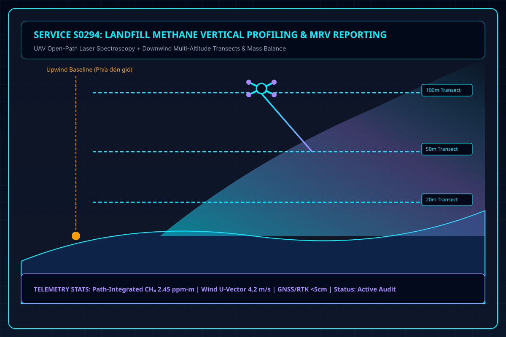
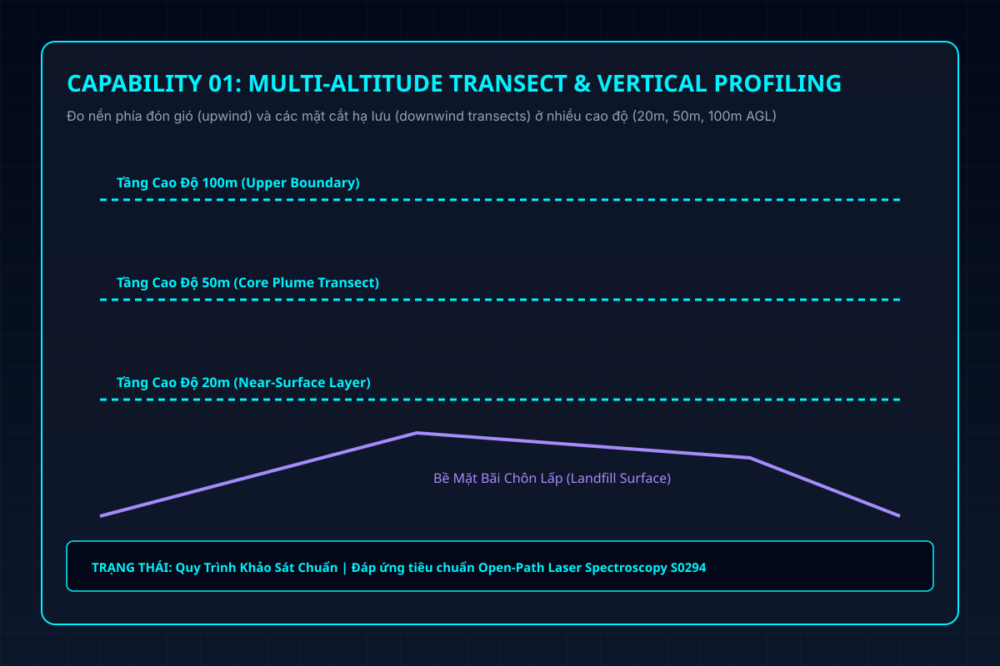
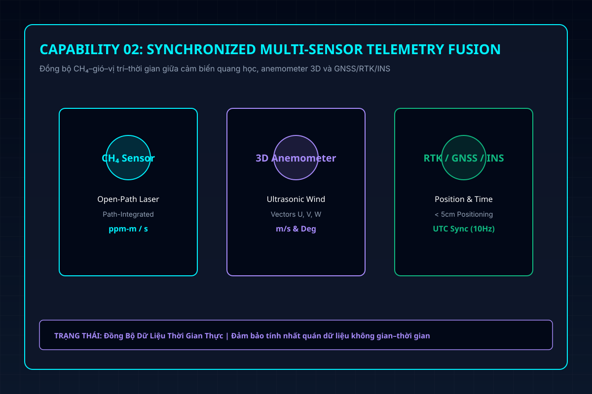
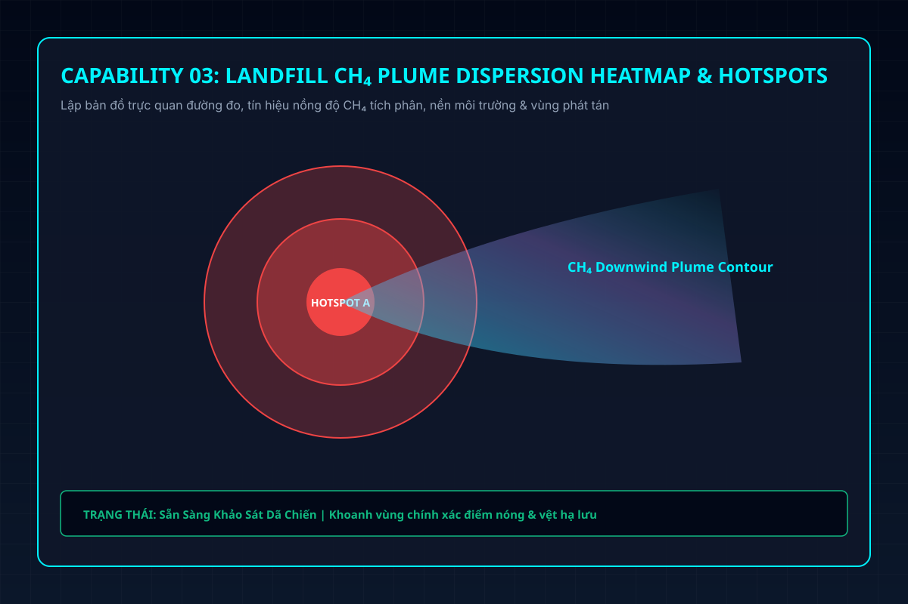
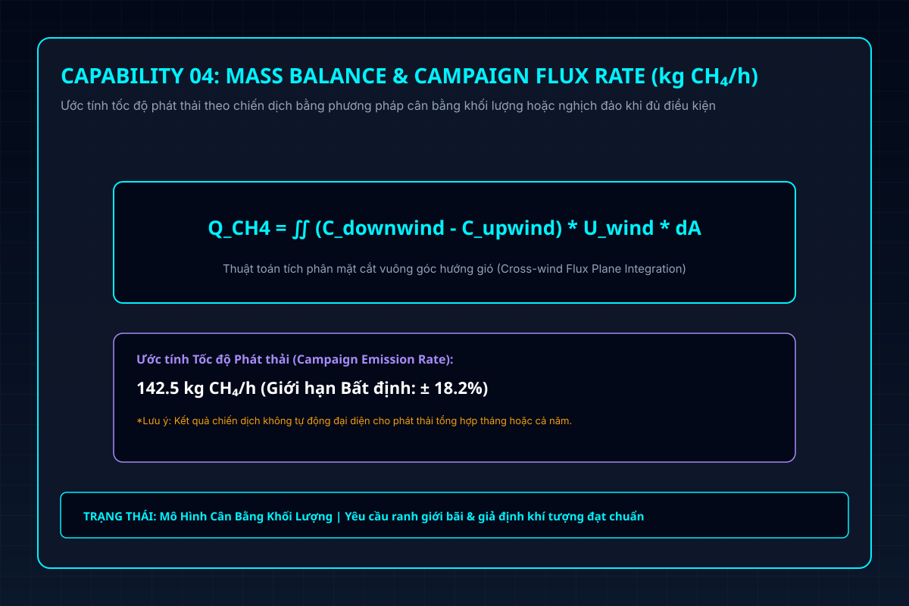
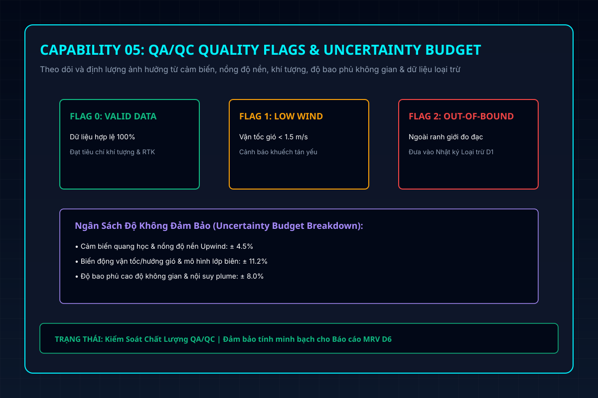

Kết hợp UAV, dữ liệu CH₄–gió–vị trí–thời gian và mô hình có điều kiện để lập bản đồ vệt phát tán, ước tính theo chiến dịch và xây dựng chuỗi bằng chứng có truy xuất.

Phương pháp truyền thống thất bại trước sự phân tán dữ liệu không gian–thời gian và thiếu chuỗi bằng chứng truy xuất kiểm kê.
Khó nhận biết điểm nóng, vệt phát tán và biến động giữa các đợt khi dữ liệu hiện trường, khí tượng và vận hành bị phân tán.
Phát thải bề mặt, vệt hạ lưu, khí thu gom và khí qua flare có thể bị cộng sai nếu chưa làm rõ ranh giới và cân bằng khối lượng.
Một phép đo hoặc bản đồ riêng lẻ không tự trở thành kết quả kiểm kê/MRV nếu thiếu QA/QC, dữ liệu loại trừ, bất định và nguồn.
Kết quả kg CH₄/h của một chiến dịch không thể tự quy đổi thành phát thải tháng/năm nếu thiếu kế hoạch lấy mẫu và dữ liệu hoạt động.
Kết hợp UAV, open-path laser spectroscopy và mô hình hóa có điều kiện để giải quyết bài toán phát tán methane bãi rác.
S0294 kết hợp UAV, cấu hình cảm biến CH₄ được phê duyệt cho từng dự án, đo nền phía đón gió (upwind) và các mặt cắt hạ lưu (downwind transects) ở nhiều cao độ để tổ chức dữ liệu CH₄–gió–vị trí–thời gian.
Kết quả có thể gồm bản đồ tín hiệu/điểm nóng, vệt phát tán (plume), ước tính kg CH₄/h theo chiến dịch khi đủ điều kiện, QA/QC, ngân sách độ không đảm bảo và báo cáo hỗ trợ MRV có truy xuất nguồn gốc.
Xây dựng trên nền tảng dữ liệu có bằng chứng, minh bạch giới hạn và không đưa ra các tuyên bố overclaim.
Bổ sung lớp bằng chứng đa chiều (không gian và tầng khí quyển) để khoanh vùng tín hiệu bất thường, vệt phát tán downwind và xác định các khu vực trọng điểm cần xác minh tiếp theo.
Hỗ trợ đội ngũ vận hành bãi chôn lấp tập trung nguồn lực kiểm tra vào các vùng phát tán thực tế dựa trên dữ liệu khí tượng; không cam kết tỷ lệ phát hiện cố định thiếu bằng chứng.
Phân biệt minh bạch phần đã đo được, phần chưa đo và mối liên hệ với lượng khí thu gom–flare trước khi tổng hợp số liệu phát thải tổng thể.
Tổ chức dữ liệu thô/đã xử lý, nhật ký QA/QC, ngân sách bất định và ma trận nguồn gốc để phục vụ kiểm kê GHG hoặc báo cáo MRV; không bảo đảm mặc nhiên cơ quan/VVB chấp nhận.
Chi tiết năng lực được ghi nhận từ chuẩn phương pháp luận S0294 kèm theo trạng thái sẵn sàng kỹ thuật.
Thiết kế đo phía đón gió (upwind) và các đường mặt cắt hạ lưu (downwind transect) theo payload, đặc thù địa điểm và kế hoạch được phê duyệt.

Gắn chặt phép đo quang học CH₄ với dữ liệu khí tượng thời gian thực và tọa độ GNSS/RTK/INS để phục vụ công tác QA/QC và phân tích plume.

Thể hiện trực quan đường bay đo đạc, tín hiệu nồng độ CH₄ tích phân, nền môi trường và các vùng cần kiểm tra tiếp trong giới hạn dữ liệu.

Ước tính tốc độ phát thải (kg CH₄/h) bằng thuật toán cân bằng khối lượng hoặc nghịch đảo khi dữ liệu, ranh giới và giả định đạt tiêu chuẩn.

Theo dõi và định lượng ảnh hưởng từ sai số cảm biến, nồng độ nền, biến động hướng gió, độ bao phủ, mô hình và dữ liệu thiếu.

Kết nối kết quả đo thực địa với dữ liệu thu gom–flare, mô hình phân hủy FOD, dữ liệu hoạt động bãi rác và xây dựng ma trận truy xuất.
Ánh xạ chính xác nhu cầu của từng nhóm khách hàng mục tiêu với output bàn giao tương ứng.
Chủ bãi chôn lấp hoặc nhà đầu tư thu hồi khí cần đường cơ sở kỹ thuật trước khi đưa ra quyết định đầu tư hệ thống thu gom–flare hoặc phát điện.
Bản đồ tín hiệu CH₄/vệt phát tán, dữ liệu chiến dịch đo đạc và danh mục chi tiết các phần dữ liệu còn thiếu.
Đơn vị vận hành bãi rác cần so sánh sự biến động của vệt phát tán methane giữa các chiến dịch trong cùng một thiết kế đo đạc chuẩn hóa.
Bản đồ tín hiệu và kết quả so sánh có điều kiện; không tự động ngoại suy số liệu chiến dịch thành phát thải cả năm.
Đội ngũ kỹ thuật vận hành cần bằng chứng so sánh độc lập sau khi can thiệp, nâng cấp hoặc sửa chữa hệ thống thu gom/phủ bãi rác.
Báo cáo so sánh có giới hạn về nồng độ nền, điều kiện gió và độ không đảm bảo; không tự kết luận quan hệ nhân quả tuyệt đối.
Đơn vị vận hành muốn nhận diện những vùng phát tán methane trên bãi rác mà hệ thống SCADA hoặc giếng khí hiện tại chưa phản ánh đầy đủ.
Lớp dữ liệu không gian đối chiếu và danh sách ưu tiên các vùng bất thường cần đội mặt đất kiểm tra trực tiếp.
Đơn vị tư vấn kiểm kê GHG hoặc phát triển dự án cần bộ dữ liệu đo thực địa và phương pháp luận có khả năng truy xuất nguồn gốc minh bạch.
Tệp dữ liệu thô/đã xử lý, nhật ký QA/QC, ngân sách bất định và ma trận nguồn gốc cho bên thứ ba/bên có thẩm quyền rà soát.
Đơn vị vận hành cần khoanh vùng các khu vực ghi nhận nồng độ methane tăng vọt bất thường trên bề mặt bãi chôn lấp.
Bằng chứng sàng lọc không gian và kế hoạch đề xuất xác minh tiếp theo; không tự kết luận nguyên nhân kỹ thuật cụ thể.
Quy trình chuyên nghiệp từ tiếp nhận thông tin, khảo sát HSE/Pháp lý đến bàn giao báo cáo có truy xuất.
Tiếp nhận mục tiêu quan trắc, ranh giới khu vực chung, dữ liệu vận hành bãi rác và xác nhận quyền sử dụng dữ liệu dự án.
Khảo sát rủi ro bay, HSE và điều kiện địa hình. Lưu ý: Cơ quan có thẩm quyền cấp phép bay; GASCOLAE chỉ hỗ trợ lập hồ sơ xin phép trong phạm vi hợp đồng.
Chốt Level dịch vụ, payload cảm biến, thiết kế đường bay đón gió (upwind) và các mặt cắt hạ lưu (downwind transects) nhiều cao độ kèm tiêu chí GO/NO-GO được phê duyệt.
Thực hiện chuyến bay thu thập đồng bộ dữ liệu CH₄–gió–vị trí–thời gian theo kế hoạch; kích hoạt quy trình dừng/escalate khi điều kiện khí tượng không đạt tiêu chuẩn.
Xử lý dữ liệu thô, thực hiện kiểm soát chất lượng QA/QC, phân tích vệt phát tán plume/định lượng flux có điều kiện và tính toán ngân sách độ không đảm bảo.
Rà soát kết quả chuyên gia, bàn giao đầy đủ dữ liệu/bản đồ/báo cáo và ghi rõ các giới hạn phương pháp, ngoại lệ cùng danh mục khuyến nghị kỹ thuật.
Lựa chọn cấp độ khảo sát phù hợp với mục tiêu kỹ thuật và ngân sách của bãi chôn lấp.
Sàng lọc phát thải & Điểm nóng
Đo nồng độ nền upwind, khảo sát các điểm nóng phát thải bề mặt và lập bản đồ tín hiệu CH₄ không gian.
Lập hồ sơ cao độ & Định lượng
Gồm Level 1 cộng thêm bay transect downwind nhiều cao độ, ước tính phát thải kg CH₄/h theo chiến dịch khi hợp lệ và ngân sách bất định.
Chuỗi bằng chứng phục vụ MRV
Gồm Level 2 cộng kế hoạch lấy mẫu đại diện thời gian, dữ liệu hoạt động bãi rác, ma trận truy xuất nguồn gốc và báo cáo hỗ trợ MRV.
Tất cả sản phẩm bàn giao tuân thủ nghiêm ngặt chuẩn mực dữ liệu và quy trình QA/QC của S0294.
Dữ liệu thô và dữ liệu đã qua xử lý, từ điển dữ liệu (data dictionary), cờ chất lượng (quality flags) và nhật ký các dữ liệu bị loại trừ.
Theo Level/Phạm vi được duyệtThể hiện đường bay đo đạc, nồng độ nền upwind, tín hiệu tích phân CH₄, vệt phát tán hạ lưu và các khu vực cần xác minh tiếp theo.
Theo Level/Phạm vi được duyệtƯớc tính tốc độ phát thải (kg CH₄/h) theo ranh giới đã thỏa thuận khi đủ điều kiện kỹ thuật, kèm mô tả phương pháp và các giả định.
Level 2–3; Có điều kiệnBáo cáo ngân sách độ không đảm bảo (uncertainty budget), độ bao phủ dữ liệu không gian, nhật ký dữ liệu loại trừ và giới hạn sử dụng.
Level 2–3; Có điều kiệnBáo cáo đối chiếu dữ liệu đo đạc thực địa với lưu lượng thu gom–flare, dữ liệu vận hành bãi rác và thông số đường cơ sở.
Level 2–3; Tùy dữ liệuTổng hợp phạm vi, phương pháp luận, QA/QC, phân tích bất định và ma trận truy xuất nguồn gốc; không phải chứng nhận/tín chỉ carbon.
Level 3; Cần xác minh thẩm địnhDanh sách khuyến nghị các khu vực cần kiểm tra hiện trường, bảng tổng hợp dữ liệu còn thiếu, trạng thái điều kiện kỹ thuật cùng phân định nhân sự chủ quản.
Có ở tất cả các LevelGASCOLAE tuân thủ chuẩn mực trung thực khoa học, chỉ cam kết trên năng lực đã có chứng minh.
Liên kết chặt chẽ phép đo quang học, khí tượng, vị trí GNSS/RTK, nhật ký QA/QC, tính toán bất định và nguồn dữ liệu thay vì chỉ cung cấp một bản đồ hình ảnh riêng lẻ.
Nêu rõ nguyên lý tích phân open-path, ranh giới diện tích đo, điều kiện cần để định lượng flux, tính đại diện thời gian và những phần dữ liệu chưa thể xác minh.
Định hướng đối chiếu kết quả khảo sát UAV với hệ thống thu gom–flare, SCADA và mô hình phân hủy FOD khi khách hàng có thẩm quyền cung cấp dữ liệu.
Không biến nghiên cứu thành thành tích thương mại; không tự ý cam kết hiệu năng, chấp nhận hồ sơ MRV hay phát hành tín chỉ carbon khi chưa đủ bằng chứng thẩm định thực địa.
Giải đáp các câu hỏi kỹ thuật phổ biến về nguyên lý quan trắc và phạm vi ứng dụng dịch vụ S0294.
Khái niệm cốt lõi: Không mặc định. Với công nghệ open-path laser spectroscopy, phép đo thu được là nồng độ tích phân theo đường quang (path-integrated concentration); cách diễn giải nồng độ theo cao độ phụ thuộc vào loại payload, hình học đo đạc và quy trình hiệu chuẩn được phê duyệt cho từng dự án.
Khái niệm cốt lõi: Không tự động. Để quy đổi số liệu từ một chiến dịch đo (kg CH₄/h) sang phát thải tổng hợp tháng hoặc năm, cần phải có kế hoạch lấy mẫu đại diện thời gian, dữ liệu hoạt động bãi rác, quy tắc xử lý dữ liệu thiếu, phân tích bất định và chỉ số GWP được phê duyệt.
Khái niệm cốt lõi: Không. Tọa độ của UAV, đường đo quang học và hình ảnh vệt phát tán (plume) downwind không tự động là tọa độ vị trí nguồn phát thải; cần kết hợp phân tích hướng gió và khảo sát xác minh bổ sung trên bề mặt.
Khái niệm cốt lõi: Không. Level 3 chỉ chuẩn bị bộ hồ sơ dữ liệu và báo cáo kỹ thuật hỗ trợ MRV. Việc thẩm định chương trình/phương pháp luận, thực hiện validation/verification và quyết định cấp tín chỉ carbon hoàn toàn thuộc thẩm quyền của cơ quan đăng ký hoặc tổ chức VVB độc lập.
Khái niệm cốt lõi: Không. GASCOLAE chỉ hỗ trợ tư vấn và chuẩn bị hồ sơ xin cấp phép trong phạm vi hợp đồng được ký kết. Giấy phép bay và các phê duyệt liên quan phải do cơ quan quản lý nhà nước hoặc chủ quản địa điểm có thẩm quyền cấp.
Khái niệm cốt lõi: Cần xác nhận pháp lý, quyền tiếp cận hiện trường, an toàn HSE, cấu hình payload/hiệu chuẩn cảm biến, điều kiện khí tượng thuận lợi (vận tốc/hướng gió), địa hình bãi rác, dữ liệu vận hành sẵn có và giới hạn nhiệm vụ bay theo từng dự án cụ thể.
Khái niệm cốt lõi: Không. Landing Page và AI Agent không hiển thị, xác nhận, tính toán, quy đổi hoặc suy ra bất kỳ con số giá nào. Mọi yêu cầu thương mại và báo giá dự án bắt buộc phải chuyển cho tuyến GASCOLAE Sales/Finance xử lý.
Vui lòng điền thông tin bên dưới để đội ngũ GASCOLAE Sales & Technical tư vấn phạm vi khảo sát phù hợp.
Định tuyến thông tin: Yêu cầu của bạn được chuyển trực tiếp tới bộ phận GASCOLAE Sales / Business Development. Các thắc mắc kỹ thuật, HSE hoặc pháp lý sẽ được chuyển tới đúng chuyên gia chủ quản rà soát trước khi đưa ra cam kết.
Lưu ý quan trọng: Form public này KHÔNG yêu cầu cung cấp tọa độ chính xác, tên dự án mật, sơ đồ hạ tầng chi tiết, tệp raw data, tài khoản đăng nhập, số serial/cấu hình thiết bị nhạy cảm hay thông tin nội bộ.
Trợ lý AI chuyên biệt cho Service S0294 – Hỗ trợ tra cứu phạm vi, use case, Level, deliverables & giới hạn kỹ thuật.